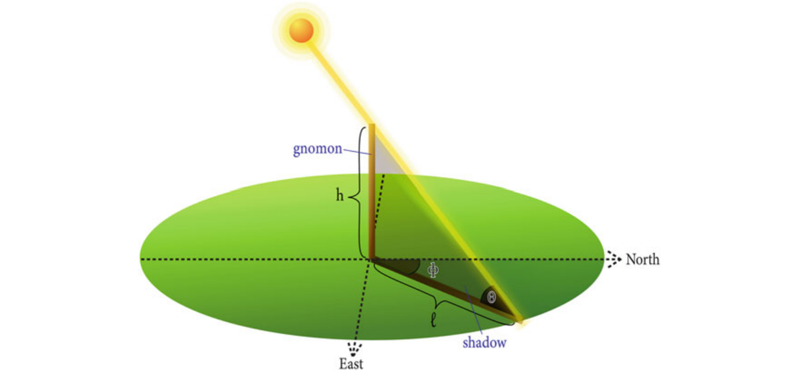
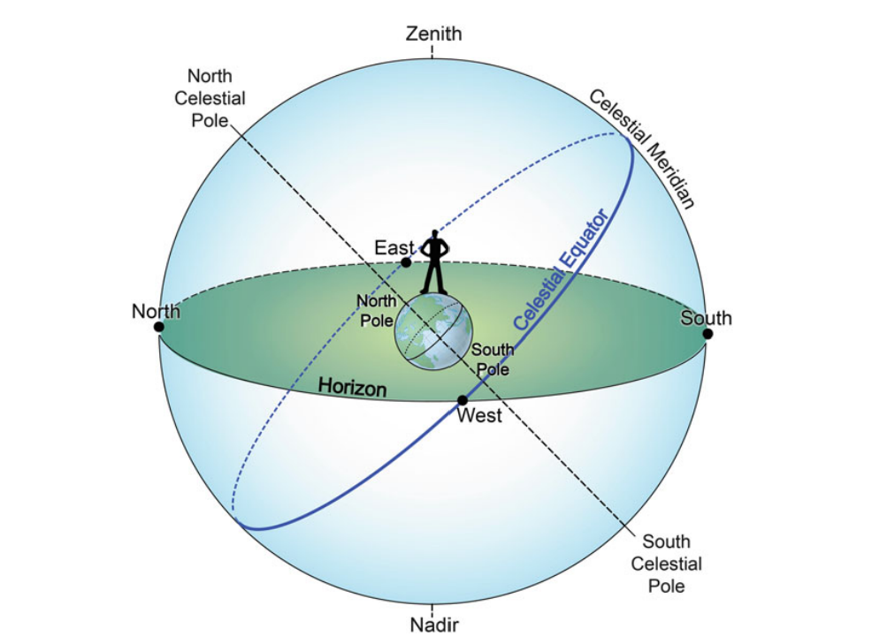
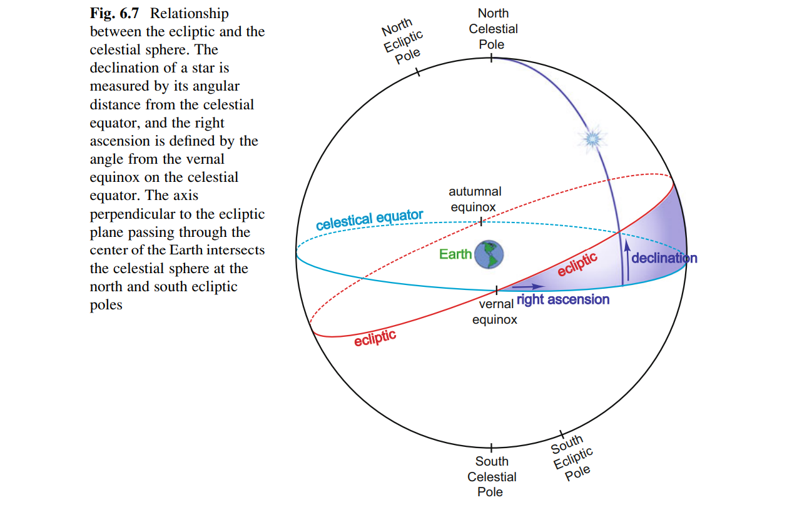
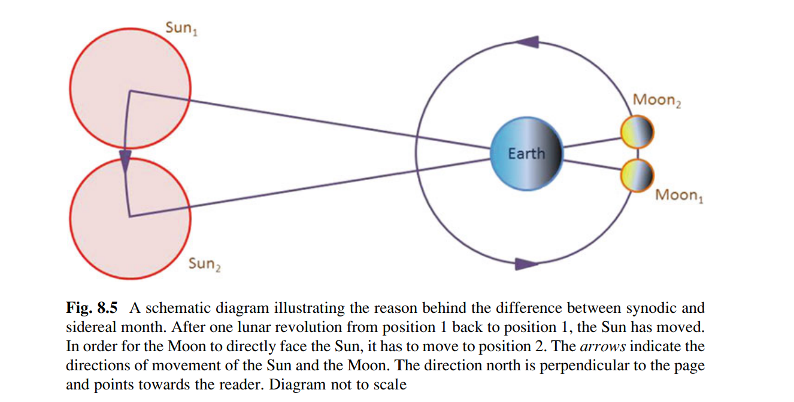

今夜星光闪闪（壹）
有两种东西，我对它们的思考越是深沉和持久，他们在我心灵中唤起的赞叹和敬畏就会越来越历久弥新，一个是我们头顶浩瀚灿烂的星空，另一个是我们心中崇高的道德法则。他们向我印证，上帝在我头顶，亦在我心中。
—— 伊曼努尔·康德
我们希望看到的是星空，还是永恒之影？
This article is a self-administered course note.
It will NOT cover any exam or assignment related content.
Humans and the Sky
早期的人类为什么痴迷于星空？
那是无来由的敬畏和非理性的迷狂仍然存在的年代，我们的祖先在瞬息万变的自然界中挣扎求生。高悬穹顶的群星却总是庄严的各居其位，把永恒的幻象投射到人类渴望的眼底。
斗柄东指，天下皆春，星空是天然的时钟与地图。星辰流转，神谕人间，星空是神性和命运的轮盘。日月盈昃，辰宿列张，星空激发了最早的理性探索。
我们的祖先与我们并无太多不同。今天的我们虽知季节源于地轴的倾斜，星座只是遥远恒星的投影；但哈勃望远镜的深空景象仍令人屏息，阿姆斯特朗的足迹踏进了历史 —— 这种「痴迷」从未消失。星空始终是人类的镜子：照见过去的敬畏，映出未来的野心，更提醒我们谦卑。在 138 亿年的宇宙史诗中，我们仍然是刚刚抬头仰望的孩童。
词语解释：
- constellations. 星座，星群
- The Lascaux Cave. 拉斯科洞穴，位于法国
- The Nebra Sky Disk. 内布拉星象盘，于德国出土
- The Pleiades. 普勒阿德斯星团，昴星团
- 古希腊：普勒阿德斯是泰坦神阿特拉斯 Atlus 与大洋神女普勒俄涅 Pleione 所生的七个女儿的统称。
- 古中国：七仙女。黄梅戏「天仙配」
- Ra. 拉，古埃及太阳神
- Apollo. 阿波罗，古希腊太阳神
- Surya. 苏利耶，古印度太阳神
- Amaterasu. 天照大神，日本太阳女神
- The Stonehenge. 巨石阵，位于英国
- The Medicine Wheel. 药轮，印第安人用于信仰和记时
- The Caracol Temple. 卡拉科尔神庙，每扇窗都对齐一个天体事件，如 equinox sunset, lunar extremes, and the planet Venus
- celestial objects. 天体
Effects of Celestial Motions on Human Activities
以下的观察均适用于北半球温带地区 (northern temperate zone)；这是大多数古文明发轫的区域，如古巴比伦，古埃及，古希腊与古中国。
Daily Motion of the Sun.
太阳的日常运动有三个重要的规律：
- Sunrise and Sunset Timing. The Sun rises earlier until it reaches the earliest sunrise time, then begins to rise later (until it reaches the latest sunrise time). The Sun also sets later as it rises earlier (sets earlier as it rises later).
- Solstices (至日). The summer solstice marks the longest day, the winter solstice marks the shortest day of the year.
- Sun's Altitude at Noon (正午太阳高度 - 一日中太阳的最大高度). It rises higher to its peak until the summer solstice, then decreases to its trough until the winter solstice.
Annual Motion of the Sun.
我们主要关注太阳的日出点在一年当中的变化 (注意：太阳总在东方升起！)：
- rises to the northeast until it reaches its northernmost point on the summer solstice.
- rises farther south.
- rises exactly in the east on the autumnal equinox (秋分).
- rises to the southeast until it reaches its southernmost point on the winter solstice.
- shifts back north.
- rises exactly in the east again on the vernal equinox (春分).
日出点变化的频率：
- 越往北 (只考虑北半球)，日出位置的变化越明显
- The shift is rapid around equinoxes, moving about 1° per day, but slows down near the solstices.
The Seasons.
- 冬至日的文化意义：为接下来难过的几个月储存粮食；庆祝白天从此开始变长。
- Tropic of Cancer (北回归线)：太阳在夏至日直射。
- Tropic of Capricorn (南回归线)：太阳在冬至日直射。
Regular But Not Simple.
我们的祖先很快发现，天体运动显然遵循着一定规律，但并不简单。太阳东升西落，但日出点与日落点变化莫测；月亮有时在白天也出现，有时在夜晚也不出现，这与白天黑夜分属日月两位神祇管理的神话相矛盾。流星，彗星与日食等「怪异」的天体现象，更使人类对星空的「永恒」产生了怀疑。
为何天体运动的规律如此复杂？创世者是否在其背后隐藏了某种讯息？这样「安排」的意义是什么？太阳与月亮是上帝为了我们的方便而创造的吗？说到底，我们在星空中究竟位于何处 What was our place in the Universe？
Ancient Models of the Universe
A Spherical Heaven.
最早的宇宙模型：天球说，盖天说。
地是一个无限大的 horizontal plane，天穹 dome of the heavens 盖于其上。希腊人称其为天球 celestial sphere。天地的交界线被称为地平线 horizon。天体行于天穹表面，轨迹纵横。观察者的头顶指向天穹的最高点，天顶 zenith。
Chasing the Shadows.
古人使用日晷 sundial 研究太阳的运动。太阳的高度与方向能通过日规 gnomon 的影子计算出来。日出与日落时，影子最长，但方向大致相对；中午时，影子最短。在一年中的所有日子，最短影子的方向始终一致 (只适用于北半球温带地区)，我们定义该方向为「北」。北方既出，东南西随之而定。
有了这四个方向，我们以观察者为中心将天穹分为四块；其中南北方向的分割线被称为经线/子午线 meridian。太阳由东向西移动，跨过子午线之前的时间 ante meridiem (Latin term for "before the meridian") 被称为 AM，之后的时间被称为 post meridiem (Latin term for "after the meridian") 被称为 PM。
Path of the Sun.
古巴比伦人发明了角度系统，将整圆分为 360 度 (°)，每一度又被分为 60 弧分 arc minute (′)，每弧分又被分为 60 弧秒 (″)。该系统的出现使得通过日晷对太阳轨迹的定量分析成为可能。

注意：太阳高度 altitude 实际上是太阳高度角。如上图，azimuth 是 \(\Phi\)，altitude 是 \(\theta\)。
天球说无法解释很多问题；它们揭示出宇宙的复杂性远远无法被简单的天圆地方所描述，人类必须进一步拓展他们的想象力。这不禁让我们怀疑，假若星空不存在，人类还能发展成为今天的智慧生物吗？
- Why is the path of the sun different in different locations?
- Where does the sun go at night? [无法观测]
- Why the north-south axis is so important? [按照天圆地方模型，四个方向应当是等价的]
词语解释：
- Thales of Miletus. 米利都的泰勒斯
- Eudoxus of Cnidus. 尼多斯的欧多克索斯，柏拉图学派，天球说
- Zenith Passages. 无影时刻，午时太阳高度为 0° 的日子
Turning of the Heavens
太阳落下，众星显现。
The Pole of Heaven.
天极在中国有着重要意义。天极所在为紫微 Purple Palace，是为帝位。四象 Four Quarters 拱卫，是为青龙 Azure Dragon，玄武 Black Tortoise，白虎 White Tiger，朱雀 Vermillion Bird。二十八宿 Twenty-Eight Mansions 居于其中，是为：
- 東宮「角」，「亢」，「氐」，「房」，「心」，「尾」，「箕」
- 北宫「斗」，「牛」，「女」，「虚」，「危」，「室」，「壁」
- 西宮「奎」，「婁」，「胃」，「昴」，「畢」，「觜」，「參」
- 南宫「井」，「鬼」，「柳」，「星」，「张」，「翼」，「軫」
The Heaven is Tilted.
在天圆地方的宇宙模型中，天穹被南-北地轴所支撑，并以每小时 15° 的速度缓缓旋转。但人们很快发现，南-北地轴是倾斜的！首先，天极并不位于天顶 zenith，并且有些星星在围绕天极旋转时会沉入地平线，带来星星升起/降落的现象。
这明显不自然；在一个「理想」的宇宙模型中，地轴应当垂直地面而存在，在这样的宇宙中，天极与天顶重合，所有的星星都能在可观测的天空中画出完整的圆形轨迹。
为了解释这不自然之处，各个文明产生了不同的神话故事。在中国，这就是著名的「共工撞断不周山」：「天柱折，地维绝。天倾西北，故日月星辰移焉」。(实际如何呢？剧透警告：地球是圆的，因此地平面 horizon 相对于赤道面 equator 倾斜)
词语解释：
- Celestial Pole. 天极，想象中众星环绕的中心点。其在地平线上的投影点标示着北方
- Pole Star. 极星，地轴指向的肉眼可见的恒星。通常指北极星 (勾陈一)，因为南天极目前缺乏亮星来标示其位置
- Polaris. 北极星，勾陈一
- Ursa Minor, "the Little Bear", 小熊座
- the Little Dipper. 小北斗七星，斗柄的末星即为北极星
- Ursa Major, "the Great Bear". 大熊座
- the Big Dipper. 大北斗七星，大熊座最重要的星象之一，绕北极星旋转
- Sirius. 天狼星，夜空中最亮的恒星。古埃及重要的历法星，中国认为其「主侵略之兆」
- Crux. 南十字星座，南十字 the Southern Cross 是该星座的重要星象
- Centaurus. 半人马座
- Anaximander of Miletus. 米利都的阿纳克西曼德 (「阿派朗」的提出者)。认为大地是悬空的 (A Free Floating Earth)，日月星均围绕其作完整的旋转。他的观点的确超越了时代，因此在当时招致了天球论者的批评：如果大地是悬空的，它为什么不往下掉落呢？
A Spherical Earth
Evidence for a Non-flat Earth.
阿纳克西曼德的传承：人们逐渐开始接受太阳的轨道是一个完整的圆形；也就是说，日落之后太阳神并没有就此休息，而是在我们看不见的空间围绕大地作另一半的旋转。这能够解释包括昼夜长短变化，季节变化以及日出日落地点变化的许多现象。人们还观察到在一年中，太阳的每日轨迹会作平行移动，但与地平线所成的夹角始终一致。
随着人类活动范围的扩大，他们发现太阳在不同的地域似乎有不同的表现，如正午太阳高度角，是否存在无影时刻等等。
在原本的天圆地方模型中，平坦的大地位于一个巨大的天穹中心；这样的话，无论在什么地方，太阳的表现都应该是一致的。但事实并非如此。此外，人们还发现，从海岸眺望，总是先看到高高的桅杆，再到船帆，再到整个船身；这提示海面其实是一个曲面。各种各样的经验使得人们开始转向「地球」说。
Round Earth Hypothesis.
现在我们的宇宙模型进化到了下一阶段：一个静止的地球 (rest, round earth)，悬浮在比它自身大得多的天球空间 (celestial sphere) 中心。太阳、月亮和星星在该天球中以 15° 每秒的速度绕地球旋转。

这自然带来了一系列新定义与传统观念的覆灭：
- Horizon, Zenith & Nadir. 这些概念不再是人类共有的了；每个观测者依他们所在之处拥有独特的地平线与天顶。另外，由于现在天穹被扩展成了天球，与 zenith 天顶相对的点被定义为天底 nadir。
- Equator & Pole. 赤道和极点的概念很自然的出现了。赤道在天球上的 counterpart 被称为天球赤道 celestial equator。
- Latitude. 纬线。赤道被定义为 0°，向南极/北极分别延伸到 90°。
- Longitude. 经线。格林威治所在的经线被定义为 0°，也被称为本初子午线 prime meridian。
- Directions. 由于南北地轴 north-south axis 的存在，南北的定义成为了 universal 的概念，而东西则是相对的。换句话说，纬线是独特的，而经线是平凡的。
- Tropics. 南北地轴的倾斜 (23.5°) 使得太阳只能直射一部份区域，只有在此区域 zenith passage 才能被观察到。我们把这个区域定义为热带，它同温带被两条回归线所隔开。
Celestial Navigation.
经线与纬线的划定使得「定位」成为了可能。
- 最大正午太阳高度角：
- 热带：90°
- 其他地区：90° \(-\) (latitude \(-\) 23.5°)
- 极星高度 \(=\) 纬度
- 六分仪 sextant
- 天体不能提供有关经度的信息。计算当地正午时间与格林尼治正午时间的差值，除以 15 可以获得经度。
A Two-Sphere Universe
人生不相见，动如参与商。—— 杜甫 (参星与商星位于黄道两端，无法被同时观测到)
Journey of the Sun Among the Stars.
人们又观察到，一颗特定的星星每天都比之前早升起 4 分钟 (相对来说，太阳每天比星星晚升起 4 分钟？)；这表示太阳与星星的旋转速度有所不同。如果把星空视为「固定」的布景，那么相对它而言，太阳在作一日之内的东升西落运动的同时，还在作一年之内的自西向东运动。
一年之内太阳经过的轨道被称为黄道 (ecliptic)。太阳在黄道上运行时，会顺次经过十二个星座，即黄道十二宫 (zodiac constellations)：Aires (白羊座), Pisces (双鱼座), Aquarius (水瓶座), Capricornus (魔羯座), Sagittarius (射手座), Scorpius (天蝎座), Libra (天秤座), Virgo (室女座), Leo (狮子座), Cancer (巨蟹座), Gemini (双子座), Taurus (金牛座)。
Inclination of the Ecliptic.
黄道相对于天球赤道存在 23.5° 的倾斜，即黄赤交角。这直接解释了太阳运动轨迹在一年之内的平行变化，进而产生了季节交替的现象。这一重要的数据在公元前 1100 年就于「周礼」中有所记载。
测量黄赤交角的方式很简单：(夏至正午太阳高度 \(-\) 冬至中午太阳高度) \(/2\) 即可。
黄道的发现使得我们的宇宙模型中出现了四个 pinpoints：黄道面与赤道面的交界点是春分点与秋分点；相对的，黄道面上剩下两个四分点为夏至点与冬至点。这样，春分，夏至，秋分，冬至这四个重要的时间节点被我们映射到了宇宙模型的空间节点之上。
Placing Stars on the Celestial Sphere.
将春分点作为 reference point，星星的位置可以被赤经 (right ascension) 与赤纬 (declination) 描述。

赤纬与观测地纬度共同决定了星星的升降模式。赤纬 \(>\) (90° \(-\) latitude) 的星星不会落下；而赤纬 \(< -\) (90° \(-\) latitude) 的星星将不会升起 (无法被观测到)。赤纬与观测地纬度一致的星星将经过天顶。
The Two-Sphere Cosmology.
黄道被发现以后，我们的宇宙模型已经趋于成熟，可以解释大部分天文现象。公元前 200 年左右，双球模型几乎取代了原有的天圆地方/天球模型，一度成为了天文学的重要真理之一。直到天文望远镜的发明以后，双球模型才迎来广泛的质疑。
- (inner sphere) 静止的地球位于宇宙中心，其远远小于外部的天球。
- (outer sphere) 外部的天球缀满了星星，它们随着该天球围绕着南北天轴自东向西旋转，每 23 小时 56 分钟为一周 (sidereal day)。
- 太阳虽参与以上的昼行运动 (diurnal motion)，平行于赤道面作以日计的旋转，它同时也缓慢的以黄道为轨穿行在星空之中，每 365 又 1/4 天为一周 (solar year)。
- 黄赤交角是 23.5°。
古人设计了各式各样的浑天仪 (armillary sphere) 来刻画双球模型，其中有一些能够相当准确的预测太阳正午高度，升落方位与时间，太阳所经黄道星座等等天文现象。
An Asymmetric Universe.
希腊人崇尚对称：但我们的宇宙却有无数的「不对称」充斥其中。地平面与赤道面的夹角 (纬度角) 使得太阳与地平面呈一定的角度作昼行运动；黄道面与赤道面的夹角又使太阳的升落方位在一年间不断地变化，进而带来了季节更替。
这些「不对称」为何存在？神为什么要将它们引入我们的宇宙？如果黄道与赤道重合，我们的生活会变成什么样子？这些问题促使人类进一步挖掘潜藏在众星之后的意义。
Dance of the Moon
Full Moon, Full Life.
与太阳相比，月亮的变化更为显著；即使是最粗心的观察者也很难错过它的舞蹈。
| 月相 🌙 | 升落时间 | 升落地点 |
|---|---|---|
| 新月/朔月 (New Moon) - 不可见 | Sunrise - Sunset (日月同升落) | 冬: SE/SW, 春: E/W, 夏: NE/NW, 秋: E/W |
| 眉月 (Waxing Crescent) - 右 < 50% | ||
| 上弦月 (First Quarter) - 右 50% | Noon - Midnight | 冬: E/W, 春: NE/NW, 夏: E/W, 秋: SE/SW |
| 上凸月(Waxing Gibbous) - 右 > 50% | ||
| 满月/望月 (Full Moon) - 完全可见 | Sunset - Sunrise (日月交替) | 冬: NE/NW, 春: E/W, 夏: SE/SW, 秋: E/W |
| 下凸月 (Waning Gibbous) - 左 > 50% | ||
| 下弦月 (Third Quarter) - 左 50% | Midnight - Noon | 冬: E/W, 春: SE/SW, 夏: E/W, 秋: NE/NW |
| 残月 (Waning Crescent) - 左 < 50% |
各种迹象表明，月亮似乎在根据太阳的位置更改月相；这导出了一个重要事实：Moon receives its light from the Sun。古希腊哲学家阿那克萨哥拉与中国的「周髀算经」都提到了这一猜想。
Two Different Lengths of a Month.
在 fixed 的星空背景下观察月亮，我们会发现它穿行的速度 (~13° per day) 远快于太阳 (~1° per day)。也就是说，每 2-3 天，月亮就会经过一个黄道星座。
月亮重新回归到同一位置，这一周期被称作恒星月 (sidereal month)，约为 27.3 天；一次完整的月相变化所花的时间被称为朔望月 (synodic month)，约为 29.5 天。

Eclipses and Moon Phases.
之前我一直有个疑问：满月升起时，太阳与月亮分别在地球的两侧；既然如此，地球为什么不会遮挡来自太阳的所有光线，为什么我们还能看见满月呢？
答案是：月球轨道平面与黄道面有一个约 5° 的夹角；同时，月球轨道保持该夹角缓慢的绕地球旋转，这一过程被称为月球的进动 (precession)。那么，当满月出现时，若月球位于或接近其轨道面与黄道面的交点 (升交点与降交点) ，月食 (lunar eclipse) 就会发生；否则，由于 5° 夹角的存在，月球仍然能反射来自太阳的光线，从而使我们观察到满月。
类似的，当新月出现时，若月球位于或接近这两个交点，日食 (solar eclipse) 就会发生。
古希腊天文学家依巴谷 Hipparchus (185-120 B.C.) 在公元前就通过研究日月食纪录计算出了 5° 这一角度。阿里斯塔克 Aristarchus (310-230 B.C.) 也通过观察日食的持续时间计算出月球轨道半径与与地球半径的比值 \(D_M/R_E=70\)。此外，他还通过观察月球上地球投影的弧度计算出地月体积比。感觉人家做的研究比我 solid 多了。
The Self-spinning Moon.
人们在仔细观察月亮时能发现其表面不规则地分布着一些黑斑；这实际上是月海 (lunar maria)，月球表面的玄武岩平原。奇妙的是，这些黑斑似乎是固定的 —— 这说明 we always see the same side of the Moon。这一面被称为 near side，而观察不到的另一面被称为 far side。
也就是说，月亮不仅绕地球公转，它自身也在自转；并且其自转的速率恰好抵消了公转带来的角度差！（spoiler alert：这种现象被称为潮汐锁定 tidal locking，是引力相互作用与能量耗散的长期结果）
The Calendars
葡萄酒：开采（需要：历法）
太阳历 (solar calendar)：以太阳为中心的历法。太阳昼行运动的周期被定义为一太阳天 (solar day)。太阳从春分点开始绕黄道一周回到原位置所需的时间被定义为一回归年 (tropical year/solar year)。
星历 (star calendar)：某颗星星昼行运动的周期被定义为一恒星天 (sidereal day)。恒星天比太阳天少 4 分钟。天狼星与昴宿星团的偕日升常被作为重要的历法标志。
- 一颗恒星隐藏在地平线下一段时间之后，首度在拂晓时从东方地平线升起，此为偕日升 (heliacal rising)。
- 一颗恒星被日光掩盖一段时间之后，首度在黄昏时从西方地平线落下，此为夕没，或偕日落 (heliacal setting)。
月历 (lunar calendar)。一次完整月相的周期被定义为一个朔望月 (synodic month)。伊斯兰历 (Islamic Calendar) 是著名的月历。
阴阳合历 (lunisolar calendar)。回归年与朔望月同时应用；注意到一回归年是 365.24 日，一朔望月是 29.53 日。这两个周期会在一章 (Metonic cycle) 中完成循环。\(19\text{yr}\times 356.24=(19\text{yr}\times 12\text{m/yr}+7\text{m})\times 29.53\)，因此一章是 19 年。应用阴阳合历的文明，例如中国与犹太文明，都有「十九年七闰」的说法。
现代公历系统的历史：罗马旧历 (阴阳合历) \(\to\) 儒略历 (Julian Calendar；一年 365 天，四年一闰) \(\to\) 格里高利历 (Gregorian Calendar；跳过百年闰，但四百年不跳过) \(\to\) 现代公历 (modern calendar，跳过四千年闰与八千年闰)。
现代公历系统在两万年内都可以保持准确：如果人类继续存在下去，两万年以内应该都不会有重大的历法系统改革了。
The Wanderers
察日月之行以揆岁星 (木星) 顺逆，察刚气以处荧惑 (火星)，历斗之会以定镇星 (土星) 之位，察日行以位处太白 (金星)， 察日辰之会以治辰星 (水星) 之位。
除日月外，还有五颗行星 (planets) 吸引了人类的目光：水星 (Mercury)，金星 (Venus)，火星 (Mars)，木星 (Jupiter) 与土星 (Saturn)。在我们的视野中，它们与星星一样，是点状的；但同时它们又与太阳、月亮一样，在固定的星空背景中穿行。
一些新概念的引入与行星的 properties：
- 日距角 elongation: A planet's angular distance from the Sun
- 顺行 prograde: the motion of the planets travelling eastward, like the Sun
- 逆行 retrograde: the motion of the planets travelling westward, opposite to the Sun
- 合(日) conjunction: planets located exactly opposite the Sun (or else)
- 冲(日) opposition: planets located exactly the same direction to the Sun (or else)
- 内行星 inferior planets: Mercury and Venus as they are never far away from the Sun (morning & evening stars)
- 外行星 superior planets: Mars, Jupiter, and Saturn as they can be seen at different times at any angular distance from the Sun
作为内行星的水星最大日距角为 ~28°，金星则是 ~48°。火星，木星与土星的日距角则可以在 0°~180°中任意取值。
The Ten Patterns of Venus.
金星与太阳周期每八年重合一次。在这期间它有十种不同的升落模式，其中五种 apparitions (appearances) 作为晨星出现，即所谓的「启明」；剩余五种作为昏星出现，即「长庚」。 人们在 400 B.C. 发现它们其实是同一颗星，「太白」。
金星也有类似月相的星象；在它的「满月」阶段亮度最大。
金星十分容易被观测到，但同时它的运动规律与日月相比又显得极为复杂：不仅在清晨与黄昏交替出现，还有十种不同的轨迹。这对古人来说一定是个难解的谜题。
Moving Backwards.
行星与太阳一样，在黄道上运动；因此人们很自然的会认为它们也在黄道上作自西向东的穿行。这种与太阳一致的运动方向被称为顺行 prograde。但诡异的是，人们有时会观察到行星与太阳反向而行，作自东向西的运动！这种情况被称为逆行 retrograde。对古人来说，行星的逆行也是一个很令人不安的征象。
此外，外行星总在冲日前后逆行；此时它们往往也展现出最高的亮度。逆行的火星是除月亮与金星外夜空中第三亮的星。
Tropical v.s. Synodic Periods.
- 回归周期 tropical period：行星在黄道上运动一周所需的时间。对人类观测者而言，是行星在固定星空背景上回到同一个位置所需时间。
- 会合周期 synodic period：行星从一次冲日/合日到下一次冲日/合日所需的平均时间，或从一次逆行到下一次逆行所需的平均时间。
由于内行星总是伴日而行，它们的平均回归周期均为一年。除此之外，古人并未找到这两种周期间的规律联系；这逐渐成为了天文学上的重要课题之一。
| Planet | Tropical period | Synodic period |
|---|---|---|
| Mercury | 365 d | 116 d |
| Venus | 365 d | 584 d |
| Mars | 687 d | 780 d |
| Jupiter | 12 y | 399 d |
| Saturn | 29 y | 378 d |
Reference
This article is a self-administered course note.
References in the article are from corresponding course materials if not specified.
- Course info: CCST9012 Our Place in the Universe, taught by Dr. T.D. Wotherspoon & Dr. H.F.D. Yu
- Course website: https://commoncore.hku.hk/ccst9012/
- Course textbook: Kwok, S. (2017). Our place in the universe.